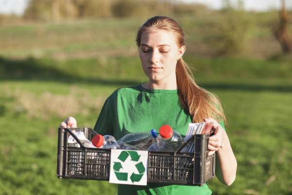
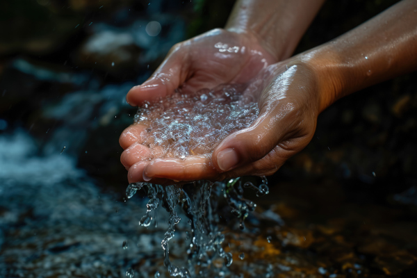
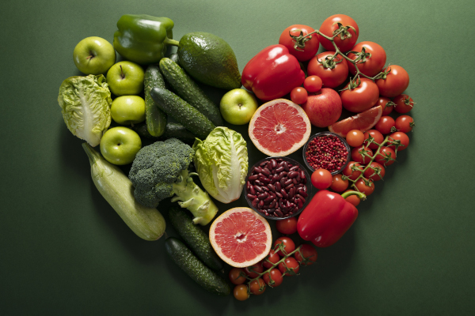
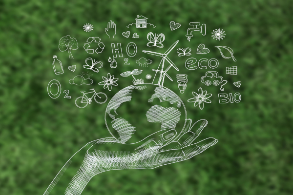

Como Ser Sustentável: Pequenas Ações, Grandes Impactos
Em meio às mudanças climáticas, à escassez de recursos e à degradação ambiental, ser sustentável deixou de ser uma opção para se tornar uma responsabilidade de todos. Mas, afinal, o que significa ser sustentável? É viver de forma equilibrada com o planeta, respeitando seus limites e garantindo que as futuras gerações também tenham acesso a uma vida digna e saudável.
Se engana quem pensa que para ser sustentável é preciso mudar tudo de uma vez. A transformação começa aos poucos, com pequenas atitudes no dia a dia. Abaixo, destacamos algumas práticas simples e eficazes que fazem toda a diferença.
1. Repense o Consumo
Antes de comprar qualquer coisa, pergunte-se: “Eu realmente preciso disso?” O consumo consciente é uma das formas mais diretas de reduzir o impacto ambiental. Priorize produtos duráveis, reutilizáveis e de origem ética. Evite o desperdício e opte por marcas comprometidas com práticas sustentáveis.

2. Reduza, Reutilize e Recicle
O famoso “3Rs” ainda é uma das estratégias mais eficazes. Reduzir o uso de recursos, reutilizar materiais e separar corretamente o lixo reciclável são atitudes simples que ajudam a diminuir a quantidade de resíduos enviados aos aterros e à natureza.

3. Economize Energia e Água
A economia de energia e água não só reduz a conta no fim do mês como também preserva recursos naturais valiosos. Desligue aparelhos eletrônicos da tomada, utilize lâmpadas LED, tome banhos mais curtos e aproveite a luz natural sempre que possível. Cada gota e cada quilowatt economizado contam.

4. Adote uma Alimentação Consciente
Prefira alimentos orgânicos, locais e da estação. Além de serem mais nutritivos, eles geralmente têm um impacto ambiental menor, pois exigem menos agrotóxicos e não percorrem longas distâncias até chegar à sua mesa. Evite alimentos ultraprocessados, como salgadinhos, bolachas recheadas e refrigerantes — eles são ricos em sódio, açúcar, gorduras ruins e aditivos químicos que fazem mal à saúde e geram grande quantidade de resíduos com suas embalagens. Optar por uma alimentação mais natural é bom para o corpo e para o planeta.

5. Dê Preferência ao Transporte Sustentável
Sempre que puder, caminhe, use a bicicleta ou transporte público. Além de reduzir a emissão de gases poluentes, essas escolhas ajudam a desafogar o trânsito e promovem uma vida mais ativa e saudável.

6. Apoie Iniciativas Sustentáveis
Valorize empresas, projetos e movimentos que promovem a sustentabilidade. Participe de campanhas de conscientização, compartilhe informações e incentive sua comunidade a adotar práticas mais ecológicas.

7. Cuide da Natureza ao Seu Redor
Plante árvores, cuide de jardins, preserve áreas verdes e ajude a proteger a fauna e a flora local. A natureza agradece — e você também se beneficia com ar mais puro, sombra, biodiversidade e bem-estar.

Conclusão: Sustentabilidade Começa com Você
Ser sustentável não exige perfeição, e sim consciência e vontade de melhorar. Quando muitas pessoas fazem um pouco, o impacto é enorme. Lembre-se: cada escolha importa. Ao mudar hábitos, você não está apenas cuidando do planeta — está investindo em um futuro melhor para todos.
Clique aqui para voltar a página anterior